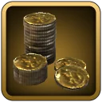

Levels and experience
Player levels, experience and how many units you may field.
Every player has a level. You start at level 1 with 0 experience and can reach level 10. Your level decides how many units you may field, which tiers the shop offers, and how strong your commander is.
Gaining experience
- Every round: 1 experience when the round's fights have ended, straight after income is paid. Win, lose or draw makes no difference.
- Buying: 5 gold for 5 experience, as often as you can afford, during preparation or during a fight.
Experience beyond what a level needs carries over to the next level, and one payment can raise you more than one level. At level 10 experience is no longer counted and can no longer be bought.
Experience needed for each level
The gold columns assume you buy every point of experience from level 1 and gain none from rounds. Purchases carry their spare experience forward, which is why some levels need fewer purchases than their experience suggests.
| Level | Experience from the level before | Total experience | Purchases for this level | Purchases in total | Gold in total | Units on the board |
|---|---|---|---|---|---|---|
| 2 | 1 | 1 | 1 | 1 | 5 | 3 |
| 3 | 1 | 2 | 0 | 1 | 5 | 3 |
| 4 | 5 | 7 | 1 | 2 | 10 | 4 |
| 5 | 15 | 22 | 3 | 5 | 25 | 5 |
| 6 | 20 | 42 | 4 | 9 | 45 | 6 |
| 7 | 25 | 67 | 5 | 14 | 70 | 7 |
| 8 | 35 | 102 | 7 | 21 | 105 | 8 |
| 9 | 40 | 142 | 8 | 29 | 145 | 9 |
| 10 | 45 | 187 | 9 | 38 | 190 | 10 |
Level by round without buying
A player who never buys experience gains only the 1 a round. The table shows the round whose preparation phase is the first at that level. A match ends after round 60 at the latest, and by then such a player has reached only level 6. Levels 7 and above have to be bought.
| Level | First round at this level | Units on the board |
|---|---|---|
| 1 | 1 | 3 |
| 2 | 2 | 3 |
| 3 | 3 | 3 |
| 4 | 8 | 4 |
| 5 | 23 | 5 |
| 6 | 43 | 6 |
Gold needed to reach a level by a given round
Experience from rounds lowers the price of every level as the match goes on. Each cell is the gold a player must have spent on experience, in total, to be at that level during the preparation of that round. The rounds shown are those in which a player who never buys gains a level, and the round commanders arrive.
| Level | Round 2 | Round 3 | Round 8 | Round 10 | Round 23 | Round 43 |
|---|---|---|---|---|---|---|
| 2 | reached | reached | reached | reached | reached | reached |
| 3 | 5 | reached | reached | reached | reached | reached |
| 4 | 10 | 5 | reached | reached | reached | reached |
| 5 | 25 | 20 | 15 | 15 | reached | reached |
| 6 | 45 | 40 | 35 | 35 | 20 | reached |
| 7 | 70 | 65 | 60 | 60 | 45 | 25 |
| 8 | 105 | 100 | 95 | 95 | 80 | 60 |
| 9 | 145 | 140 | 135 | 135 | 120 | 100 |
| 10 | 190 | 185 | 180 | 180 | 165 | 145 |
Units on the board
You may field as many units as your level, and never fewer than 3. So levels 1 to 3 all allow 3 units, and level 10 allows 10 units. Your commander stands on the board without counting towards this number.
Global items can raise the number further:
 Veteran's Charter (Tier 5): +1 to the number of units you may field
Veteran's Charter (Tier 5): +1 to the number of units you may field
During preparation you may place more units than this. When the fight begins, the units you moved most recently go back to the bench, one for each unit over the number. If the bench is full, the cheapest units on your board are sold instead, one for each unit still over (the most recently moved first when prices tie). Board and bench has the details.
Shop odds by level
Each slot of the shop rolls its tier from your level's row. The shop explains the roll in full and the odds calculator works out the chance of finding one unit.
| Level | Common | Uncommon | Rare | Epic | Legendary |
|---|---|---|---|---|---|
| 1 | 80% | 20% | 0% | 0% | 0% |
| 2 | 70% | 30% | 0% | 0% | 0% |
| 3 | 55% | 35% | 10% | 0% | 0% |
| 4 | 45% | 40% | 15% | 0% | 0% |
| 5 | 35% | 40% | 25% | 0% | 0% |
| 6 | 25% | 35% | 35% | 5% | 0% |
| 7 | 20% | 30% | 40% | 10% | 0% |
| 8 | 18% | 24% | 35% | 20% | 3% |
| 9 | 15% | 21% | 30% | 28% | 6% |
| 10 | 12% | 18% | 28% | 32% | 10% |
| 11 (with an item) | 15% | 20% | 25% | 30% | 10% |
A global item can move you along the table without changing your level, your unit count or your commander:

Gilded Invitation (Tier 5): the shop rolls as if you were 1 level higher
Rows above level 10 can only be reached this way.
Commander level and talents
Your commander has no level of its own: it uses yours. A commander is the same from level 1 to level 5; its stats and abilities grow from level 6 to level 10, though not every value rises at every level. Commanders are offered after round 9; see How commanders work.
Reaching certain levels unlocks a talent choice for your commander. The choice opens during preparation, lowest level first. If you reach the level by buying experience during a fight, the choice opens at the next preparation. If you already passed a level before taking a commander, its choice opens as soon as the commander is on the board. A choice still open when the fight begins is made for you: the first option is taken.
A level reached before round 10 opens its choice when you take your commander, so no choice can open earlier than that round.
| Talent | Unlocks at level | Gold to buy that level from the start | Earliest round the choice opens without buying |
|---|---|---|---|
| 1 | 4 | 10 | 10 |
| 2 | 6 | 45 | 43 |
| 3 | 8 | 105 | never |
| 4 | 10 | 190 | never |